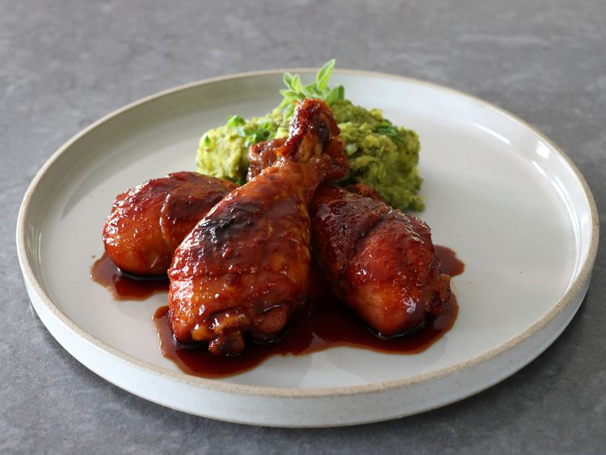

Hot Honey Drumsticks

These hot honey drumsticks give the sweet heat treatment to America's
fourth favorite chicken part. Drumsticks are gaining in popularity, and
this delicious, very spicy recipe may just help the cause.
Ingredients
- 10 chicken drumsticks
- 1 habanero pepper, seeded and halved
- 1/4 cup rice vinegar
- 1/3 cup soy sauce
- 1/2 cup honey
- 1 teaspoon garlic powder
- 1 teaspoon onion powder
- 1/2 teaspoon hot chili flakes
- 1/4 teaspoon cayenne pepper, or to taste
- 1 1/2 teaspoons Korean chili paste (gochujang)
- 2 tablespoons snipped fresh chives (optional)
Directions